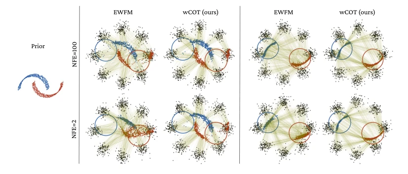
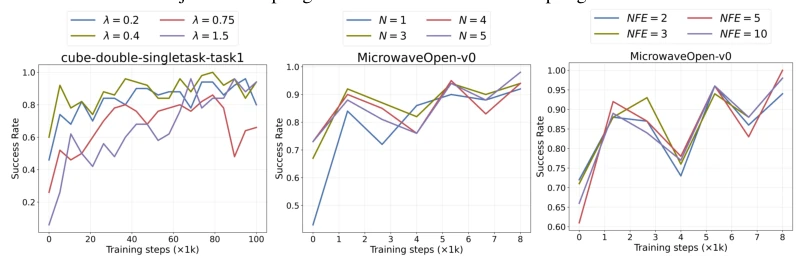
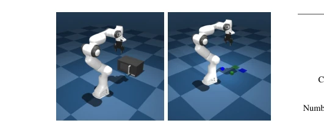

This OTQL attempts to "slim down" flow models using optimal transport to address the pain points of slow inference and difficult fine-tuning for diffusion/flow policies. It claims to boost success rate from 36% to 86% with 50 interactions and reduce inference steps by 70%. This sounds promising, considering distillation is too expensive and RL is too slow. However, do not be too optimistic; this method is not a black box, it requires neural ODEs, OT coupling is prone to collapse in high dimensions, and manual environment reset is required. It is indeed effective for VLA fine-tuning, but essentially it is RL post-training that "changes the soup but not the medicine," merely incorporating Q-values into the OT loss. It is suitable for scenarios sensitive to inference speed and able to accept ODE structures; do not expect it to solve all distribution shift issues.
Although current VLA and flow policies can capture multi-modal action distributions, inference requires multi-step integration causing latency [13, 14], and relies on a large amount of high-quality demonstrations. Although RL post-training can utilize robot experience, traditional diffusion/flow policy Critic training slows down the overall process due to slow inference [23, 25]. Existing acceleration methods mostly rely on expensive distillation [26, 27], while methods balancing both acceleration and RL fine-tuning are scarce. Furthermore, distribution shift often leads to policy failure, and collecting new demonstrations is costly. This paper aims to utilize OT theory to optimize flow paths, avoid complex distillation, achieve efficient fine-tuning, and solve the problem where speed and performance are hard to achieve simultaneously.
The OTQL framework includes two stages: Critic training and flow fine-tuning. First, train the Q-function using a replay buffer, estimate the advantage function via TD Loss, and update the target network using EMA. Second, the core innovation is wCOT-CFM: using Q-values as an energy function to weight the target action distribution, computing the Conditional Optimal Transport (COT) coupling between noise and weighted actions. By concatenating condition vectors to satisfy COT triangle constraints, and sampling noise-action pairs to train the flow network, trajectories flow straight from noise to high-value actions. Additionally, to address variance issues caused by Q-function peaks, weight truncation and rejection sampling mechanisms are introduced. Finally, during inference, straightened paths are used to reduce integration steps, combined with rejection sampling to filter high Q-value actions. This method avoids multi-step integration of SDE/ODE, achieves single-step or few-step inference, and simultaneously guides the policy to converge to high-reward regions via Q-values, balancing training efficiency and policy quality.

Figure 1: Energy-weighted Flow Matching (EWFM) [22] and weighted-marginal COT flow matching (wCOT) flows trained to generate the tilted conditional two moons distribution from the 8 Gaussians distribution. Generation with 100 (top row) and 2 (bottom row) euler integration steps is shown. The samples generated from both methods given an energy function that is 1 inside the drawn circles and 0 everywhere else is shown in the left and given an energy function that is 1 outside and 0 inside the circles in the right.
Evaluated on OGBench, MuJoCo, and 4 real-world tasks. Compared with baselines such as DSRL, FQL, EWFM. Metrics are success rate and NFE. Results: Single-task success rate increased from 36% to 86%, VLA from 38% to 76%, NFE reduced by 70%. Ablation experiments show λ and N have significant impact. In real tasks, SmolVLA performance improved after OTQL fine-tuning, proving the method's robustness in real physical environments. In offline RL, OTQL performance is better than multi-step inference methods, and the speed advantage is obvious in online fine-tuning. Especially in Cube and Humanoid tasks, OTQL significantly outperforms baselines under limited interactions.

Figure 6: Ablation of OTQL for 𝜆, 𝑁and inference steps NFE

Figure 7: MuJoCo tasks for online RL post- training